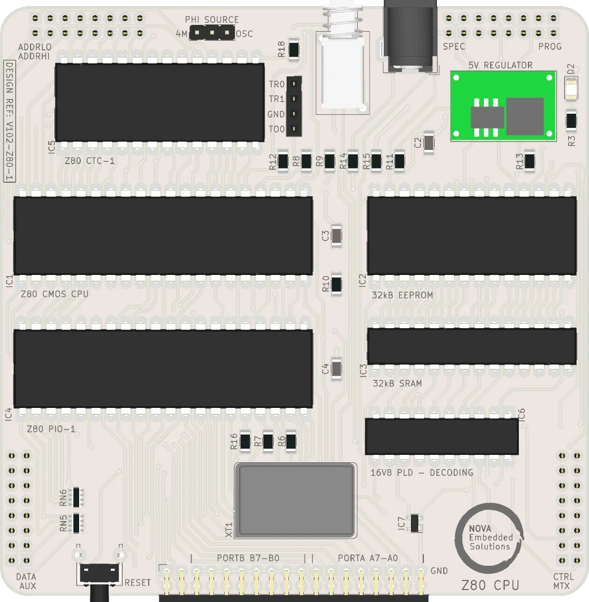

V102-Z80-1
Z80 SBC
A complete minimal computer on one board, and the base of every Z80 stack.
- CPU
- Z80 at 4 MHz
- ROM
- 32 K EEPROM, 0000–7FFF
- RAM
- 32 K SRAM, 8000–FFFF
- I/O
- CTC at 18h, PIO at 20h
- Glue
- ATF16V8B

What's on the board

How it works
- ATF16V8B decodes A15 and /MREQ into ROM (0000–7FFF) and RAM (8000–FFFF), and A2–A7 with /IORQ into CTC (18h) and PIO (20h)
- MAX811, reset button, keyboard reset and programmer RESX merge in the PLD onto bus RSTB
- IM 2 daisy chain CTC → PIO → IEO2; IEO1 pulled up so it works alone or behind the I/O board
- Powers the stack: 12 V jack, switch, buck module, +5 V onto SPEC pin 2. Clock from its 4 MHz can or bus 4M
What it took
- ROM /WE and /OE brought out to the bus: the CPU can never write the EEPROM, but the programmer can, with no chip pulling
- Programmer uses /BUSRQ rather than /WAIT, so the Z80 genuinely floats its address, data and strobes
- Rev 001 moved reset to a MAX811 for a clean power-on reset
- A complete minimal computer on its own, and the base of every Z80 stack
Next revision
- Gate memory /OE with /RD: ROM and RAM drive the bus during writes
- Pull-ups on /MREQ, /IORQ, /RD, /WR while the programmer holds the bus
- 100 nF at every IC; consider bus buffers for a full stack
- 12 V on PROG pin 8 next to ROMOEX; no input protection
Schematic
Tap to open it full screen, then pinch, scroll or drag to explore. It stays sharp at any zoom.
Photo and files
Live photo: board-z80.jpgThe built Z80 SBCStraight down or three-quarter view, chips fitted, plain background.
Downloads
Read the PLD source, V102-Z80-00
Name v102-z80-0 ; PartNo 00 ; Date 1/8/2022 ; Revision 01 ; Designer Nigel ; Company xxx ; Assembly None ; Location ; Device g16v8a ; /* *************** INPUT PINS *********************/ PIN 1 = RESB ; PIN 2 = RESX ; PIN 3 = ROMCSX ; PIN 4 = A2 ; PIN 5 = A3 ; PIN 6 = A4 ; PIN 7 = A5 ; PIN 8 = A6 ; PIN 9 = A7 ; PIN 11 = WRB ; PIN 12 = A15 ; PIN 17 = IORQB ; PIN 18 = MREQB ; /* *************** OUTPUT PINS *********************/ PIN 13 = CSB3 ; PIN 14 = CSB2 ; PIN 15 = CSB1 ; PIN 16 = CSB0 ; PIN 19 = RSTB ; /* *************** LOGIC FORMULA *********************/ !CSB0 = (!A15 & !MREQB & IORQB) # ROMCSX ; // * ROM enable - active low - mapped to top 32k (now !CSB1 = A15 & !MREQB & IORQB ; // * RAM enable - active low - mapped to lower 32k for restart at 0x0000 !CSB2 = !A7 & !A6 & A5 & !A4 & !A3 & !A2 & !IORQB ; // * PIO mapped to ports 20, 21, 22, 23 001000xx !CSB3 = !A7 & !A6 & !A5 & A4 & A3 & !A2 & !IORQB ; // * ctc mapped to ports 18, 19, 1a, 1b 000110xx !RSTB = RESX # !RESB ; // * resetbar from reset cct OR external hi reset pulse